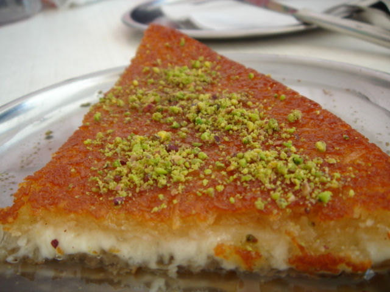

A Hidden Delicacy
Knafeh (Kunafa)
This recipe for Knafeh is originally from Bake With Zoha, a blog written by Zoha Malik and found on https://bakewithzoha.com/palestinian-knafeh/

Photo by: elif ayse CC BY 2.0 https://creativecommons.org/licenses/by/2.0/, via Wikimedia Commons.
Ingredients
- 1 lb Kataifi (shredded phyllo dough) - usually 1 pack
- ¾ cups ghee or butter + more to brush inside pan
- 1 teaspoon Knafeh food color
- 1 lb sweet cheese (or Queso Fresco or ricotta)
- 1 lb fresh mozzarella, pressed dry
- 1 ½ cups sugar
- 1 ½ cups water
- Rosewater extract to taste
- Chopped pistachios for decoration
Equipment
- Oven, preheated to 450F
- Large Bowl
- 2 Baking Pans
- Cutting Board
- Knife
- Spoon
- Spatula
- Saucepan
- Serving dish
Directions
- Prepare the cheeses. If using an alternative to sweet cheese which contains salt, first soak in water for 2 hours. Then slice into ¼" slices along with the mozzarella and press between paper towels to dry out (don't do this step if using ricotta cheese)
- Pre-heat oven to 450F and prepare your baking pan(s) by brushing butter inside
- In a large bowl, shred the kataifi into 1-3" long strands
- Mix the ghee with the food color and add to the kataifi. Rub in thoroughly with your hands to coat all strands
- Add ¾ of the kataifi to the baking pan(s) and press down very firmly, pushing some of it up the edges to create a tart like casing
- Add a layer of the sweet cheese, crumbling it with your hands. Then add a layer of mozzarella, tearing into large chunks as you go. Press down both cheeses
- Add the remaining kataifi on top and press down
- Bake for 20-25 minutes until the Knafeh is golden and crispy on the edges and bottom, it should become loose from the pan
- In the meanwhile, prepare the syrup by mixing sugar, water and rosewater extract in a saucepan. Bring to a boil and simmer for just 1-2 minutes until the sugar dissolves. Remove from the heat and let cool
- Once the Knafeh is baked, carefully turn it out onto the serving dish you are using. Using a large spoon, gently drench the Knafeh in the syrup. It should be thoroughly wet but not overflowing
- Decorate with chopped pistachios, slice and serve! Knafeh is best eaten very warm (or hot)
This page was created as academic activity only.